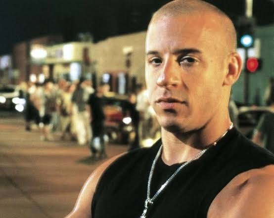
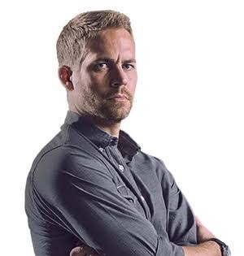
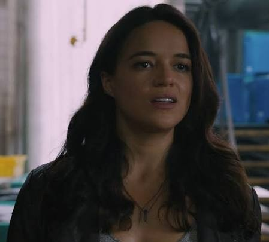
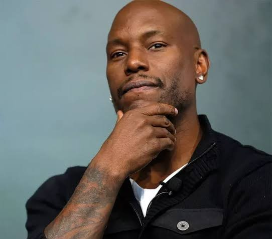
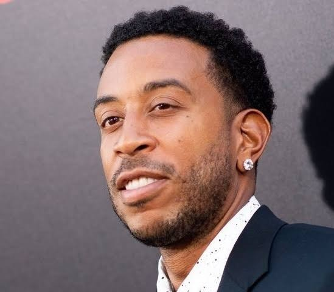
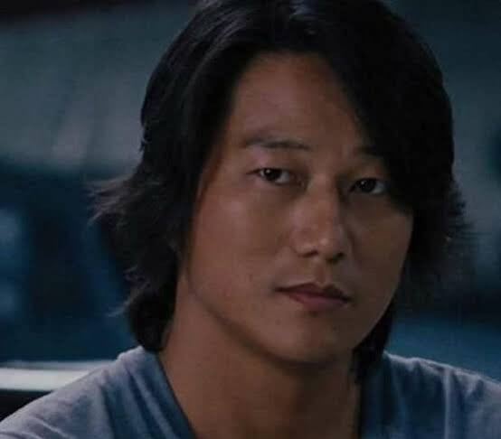
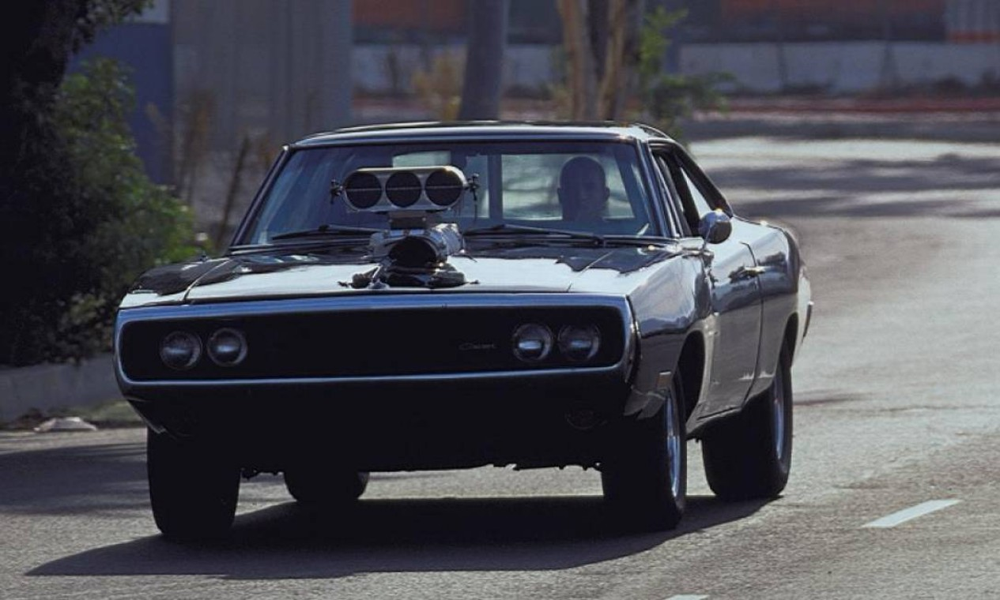
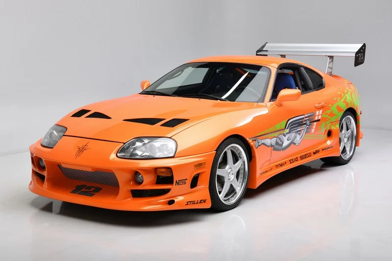
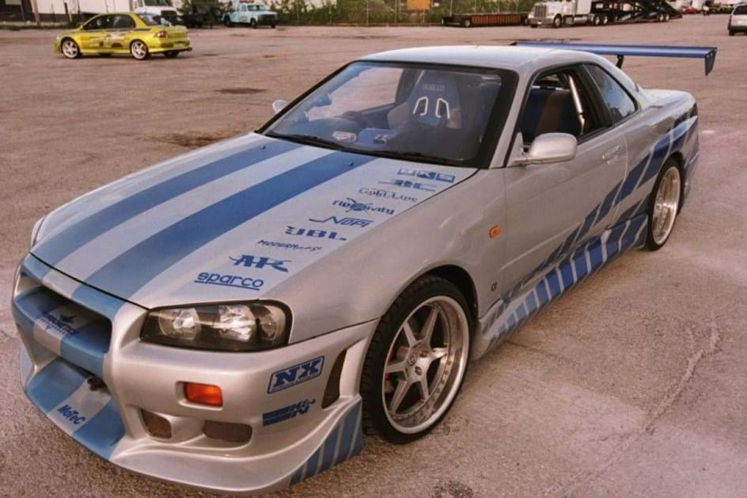

A história da franquia
Velozes e Furiosos começou em 2001, com o lançamento de seu primeiro filme. A história acompanha Dominic Toretto, um apaixonado por carros, e Brian O'Conner, um policial que se aproxima de seu grupo durante uma investigação.
Ao longo dos filmes, as corridas de rua dão espaço a missões cada vez maiores, envolvendo perseguições, assaltos e desafios internacionais. Mesmo com toda a ação, a amizade e a família continuam sendo temas importantes da franquia.
Personagens principais

Dominic Toretto
Conhecido como Dom, é um piloto habilidoso que valoriza a família e a lealdade.

Brian O'Conner
Ex-policial que se torna um dos grandes amigos de Dom e um importante integrante da equipe.

Letty Ortiz
Uma excelente piloto, corajosa e habilidosa, que participa de diversas missões.

Roman Pearce
Conhecido pelo humor e pelas brincadeiras, também participa das missões da equipe.

Tej Parker
Especialista em tecnologia e mecânica, ajuda a equipe a planejar e executar suas operações.

Han Lue
Um piloto habilidoso, conhecido por sua tranquilidade e seu estilo marcante.
Carros marcantes
Os carros são uma das principais atrações da franquia. Cada modelo possui características próprias e aparece em corridas, perseguições e cenas de ação.

Dodge Charger R/T
O clássico carro preto de Dominic Toretto. É um dos veículos mais reconhecidos da franquia.

Toyota Supra
O Toyota Supra laranja de Brian é um dos carros mais lembrados do primeiro filme.

Mitsubishi Eclipse
O Eclipse verde de Brian também se tornou um carro marcante para os fãs da série.

Nissan Skyline GT-R
Um esportivo japonês conhecido por seu desempenho e sua presença em cenas de corrida.
Curiosidades
- O primeiro filme foi lançado em 2001.
- A franquia começou com foco em corridas de rua.
- Os filmes passaram a incluir missões internacionais.
- Os carros modificados são parte importante da série.
- A ideia de família é um dos temas recorrentes da história.